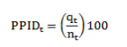

3 - Garantizar una vida sana y primover el bienestar para todos en todas en todas las edades
Meta 3.1 Para 2030, reducir la tasa mundial de mortalidad materna a menos de 70 por cada 100,00 nacidos vivos
Indicador 3.1.1 Razón de mortalidad materna
Meta 3.1 Para 2030, reducir la tasa mundial de mortalidad materna a menos de 70 por cada 100,00 nacidos vivos
Indicador 3.1.1 Razón de mortalidad materna
Nota: A partir de 2006 se utiliza la ENIGH con factores ajustados a la proyección de la población de CONApo, estimados por INEGI. La información de 1989 se roma de los datos históricos del indicador.
Fuente: Estimaciones de CONEVAL con información de INEGI. ENIGH (varios años)
| Entidad Federativa | 2012 | 2012 | 2012 | 2012 | 2012 | 2012 | 2012 | 2012 | 2012 | 2012 | 2012 | 2012 | 2012 | 2012 |
|---|---|---|---|---|---|---|---|---|---|---|---|---|---|---|
| Nacional | 6.3 | 6.3 | 6.3 | 6.3 | 6.3 | 6.3 | 6.3 | 6.3 | 6.3 | 6.3 | 6.3 | 6.3 | 6.3 | 6.3 |
| Aguascalientes | 6.3 | 6.3 | 6.3 | 6.3 | 6.3 | 6.3 | 6.3 | 6.3 | 6.3 | 6.3 | 6.3 | 6.3 | 6.3 | 6.3 |
| Baja California | 6.3 | 6.3 | 6.3 | 6.3 | 6.3 | 6.3 | 6.3 | 6.3 | 6.3 | 6.3 | 6.3 | 6.3 | 6.3 | 6.3 |
| Baja California Sur | 6.3 | 6.3 | 6.3 | 6.3 | 6.3 | 6.3 | 6.3 | 6.3 | 6.3 | 6.3 | 6.3 | 6.3 | 6.3 | 6.3 |
| Campeche | 6.3 | 6.3 | 6.3 | 6.3 | 6.3 | 6.3 | 6.3 | 6.3 | 6.3 | 6.3 | 6.3 | 6.3 | 6.3 | 6.3 |
| Chiapas | 6.3 | 6.3 | 6.3 | 6.3 | 6.3 | 6.3 | 6.3 | 6.3 | 6.3 | 6.3 | 6.3 | 6.3 | 6.3 | 6.3 |
Nota: A partir de 2006 se utiliza la ENIGH con factores ajustados a la proyección de la población de CONApo, estimados por INEGI. La información de 1989 se roma de los datos históricos del indicador.
Fuente: Estimaciones de CONEVAL con información de INEGI. ENIGH (varios años)
| Definición |
Es el porcentaje de la piblación que en el año del calculo vive con menso del equivaliente a 1.25 dólares diarios a precio de 2005, según la paridad del poder adquisitivo. |
|---|---|
| Algoritmo |

Significado de las siglas o abreviaturas: PPIDt: Porcentaje de la población con ingresos per cápital menosrea a 1.25 dólares diarios,qt: Número de las personas con ingreso per cápita inferior a 1.25 dólares, y nt: Número de personas |
| Fuente generadora de la información estadística utilizada para el cálculo del indicador:oritmo |
Instituto Nacional de Estadística y Geografía (INEGI). Índice Nacional de Precios al Consumidor. http://www.inigi.org.mx/est/contenidos/proyectos/inp/inoc.aspx Consejo Nacional de Evaluación de la Política de Desarrollo Social (CONEVAL). Medición de la pobreza por ingresos. Banco Mundial (BM). Global Purchasing Power Paraties and Real Expenditures. 2005 International Comparison Program. http://www.worldbank.org/data/icp. Instituto Nacional de Estadística y Geografía (INEGI). Encuesta Nacional de Ingresos y Gastos de los Hogares (ENIGH) 1992-2012 y Banco de Información Económica (BIE). Serie de datos para PIB y Consumi Privado. Para entidad federativa: Instituto Nacional de Estadística y Geografía (INEGI). Módulo de condiciones Socioeconómicas de la ENIGH (MCS-ENIGH) 2008, 2010, 2012 y 2014. |
Nota: A partir de 2006 se utiliza la ENIGH con factores ajustados a la proyección de la población de CONApo, estimados por INEGI. La información de 1989 se roma de los datos históricos del indicador.
Fuente: Estimaciones de CONEVAL con información de INEGI. ENIGH (varios años)
| Entidad Federativa | 2016 |
|---|---|
| Aguascalientes | 6.3 |
| Baja California | 6.3 |
| Baja California Sur | 6.3 |
| Entidad Federativa | 2016 |
|---|---|
| Aguascalientes | 6.3 |
| Baja California | 6.3 |
| Baja California Sur | 6.3 |